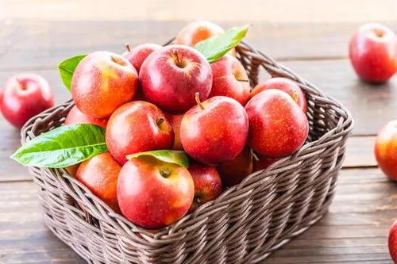
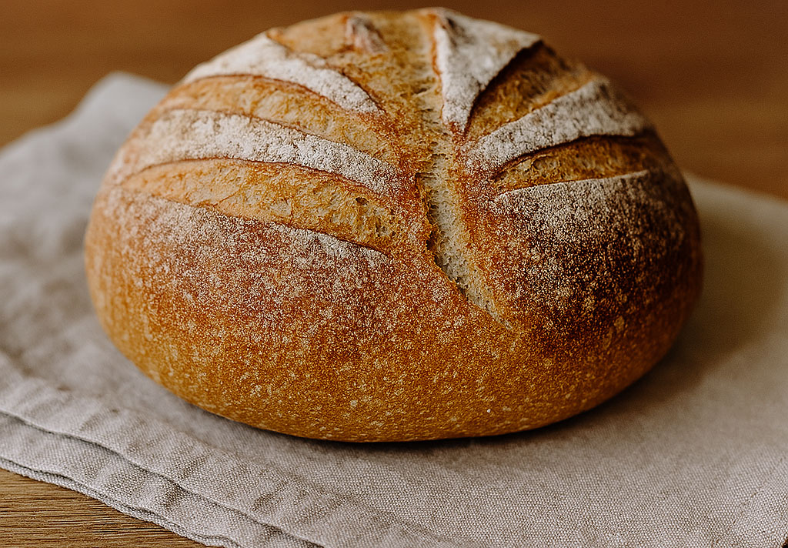
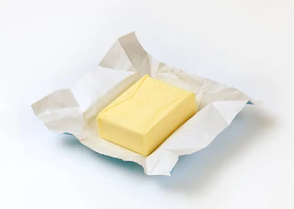
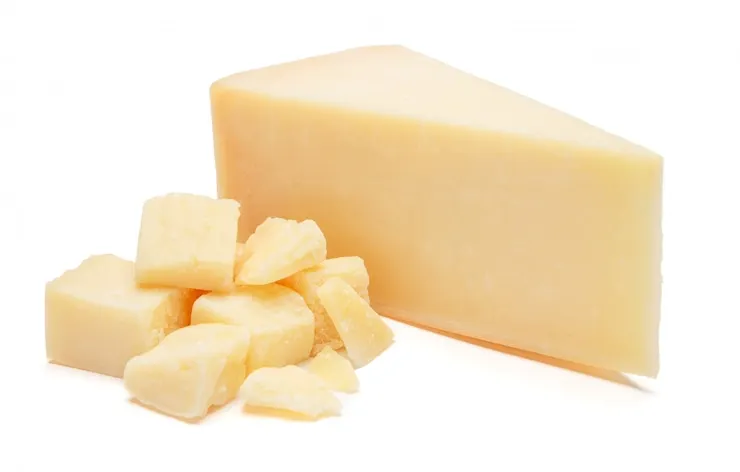
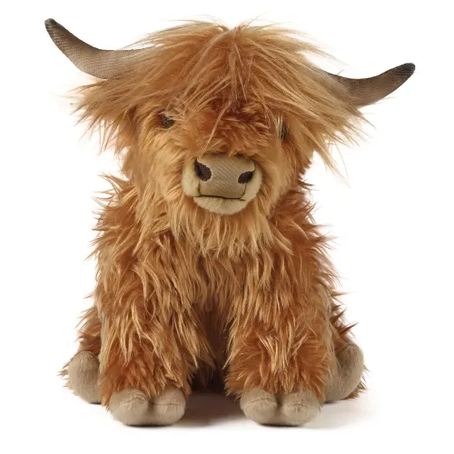
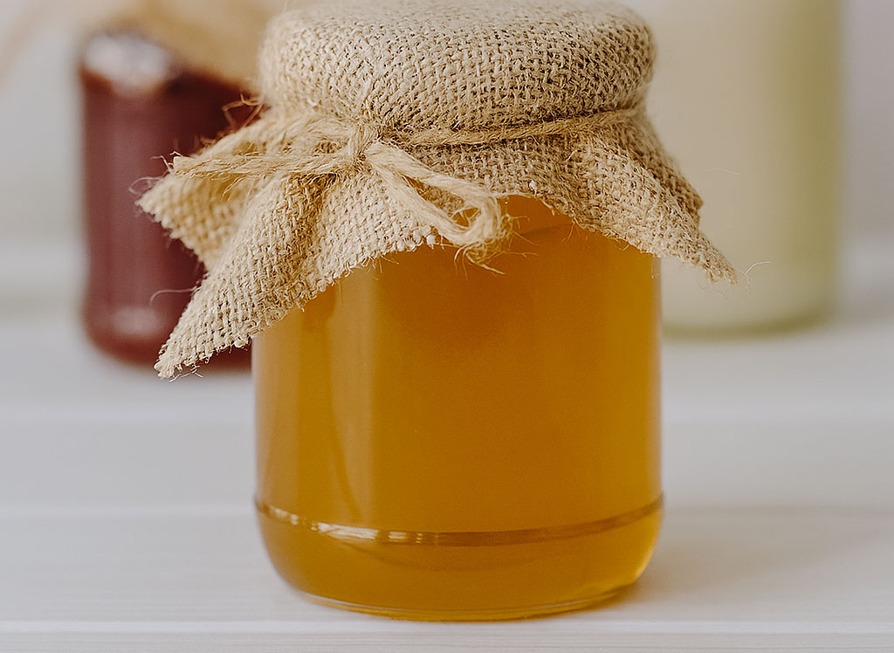
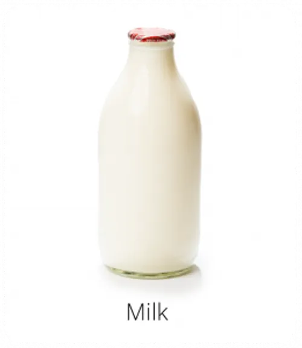
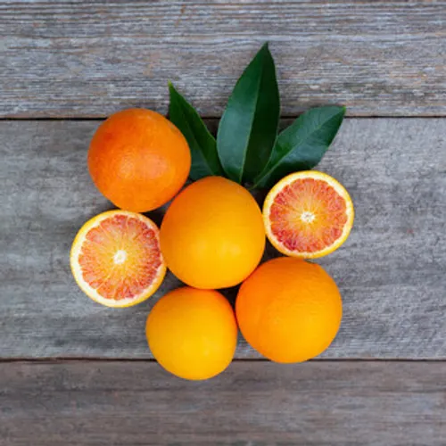
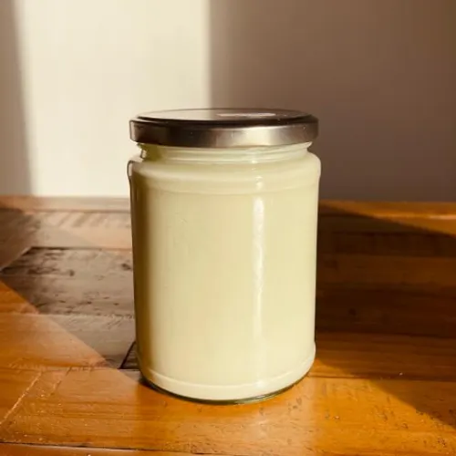

The Edinburgh and Carlisle Farm Shop offers a warm and welcoming countryside shopping experience, bringing together the best of locally sourced produce, handcrafted goods, and traditional farm charm. Visitors can browse shelves filled with homemade jams, fresh artisan breads, farm‑pressed juices, free‑range eggs, honey from nearby hives, and seasonal fruit and vegetable boxes grown right on the land. Every product reflects the farm’s dedication to quality, sustainability, and community, giving guests an authentic taste of rural life

Fresh Apples
Locally harvested Apples with natural sweetness.

Artisan Bread
Freshly baked rustic loaves daily.

Farm Butter
Freshly produced butter from cow milk .

Cheese
Locally crafted farm cheese.

Toy Cow
Friendly, Squishy farm cow.

Farm Eggs
Fresh free‑range eggs daily.

Local Honey
Pure honey from our farm hives.

Farm Milk
Fresh, creamy, natural farm milk.

Farm Oranges
Freshly harvested oranges.

Toy Sheep
Squishy Sheep for kids.

Fresh Strawberry Jam
Freshly harvested Jam made of Strawberry.

Fresh Yogurt
Fresh yogurt made from cow milk.